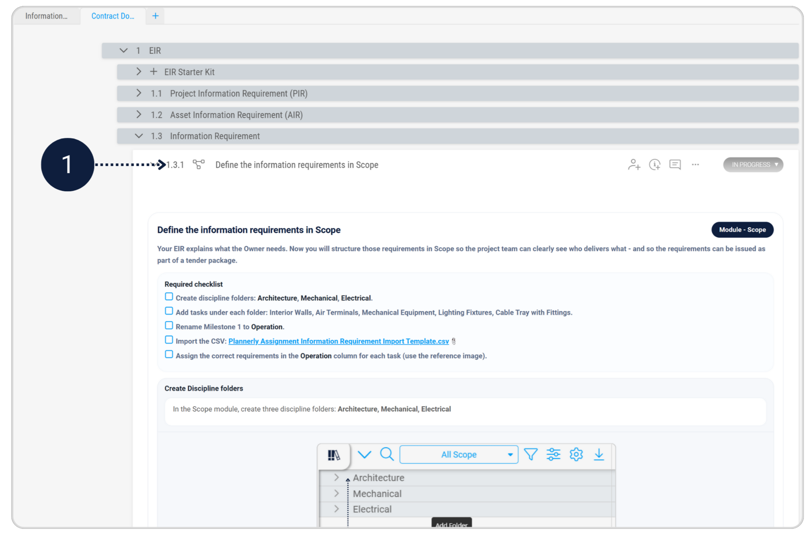

A structured information workflow starts with the Owner. In this task, you’ll translate the Owner’s strategic goal into clear, practical Exchange Information Requirements (EIR) - the document that shapes what information is delivered, when it is delivered, and why it matters.
Work through the pre-filled EIR document in the Contract Documents and complete the required sections.
Confirm and structure the information requirements in Scope so they are clearly assigned for the Operation milestone.
Access the pre-filled Exchange Information Requirements (EIR) document provided in the Contract Documents.
This document already contains the required structure. Your task is to work through the EIR and complete the highlighted Smart Fields.
Follow the instructions in the “Define the information requirements in Scope” section in the EIR Document to complete this step.
To continue, go back to the “Define the information requirements in Scope” section in the Contract Documents.
Follow the instructions in the "Invitation To Tender" section in the EIR Document to complete the final deliverable for Task 1.